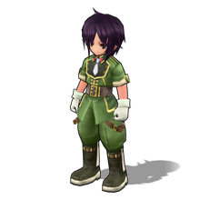
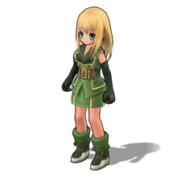
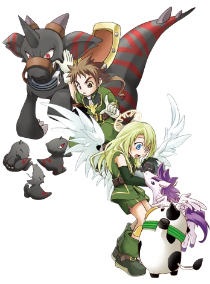
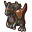
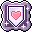
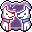

Breeder Guild Receptionist
Breeder Guild Receptionist
 Breeder Guild Receptionist
Breeder Guild Receptionist Breeder Guild Master
Breeder Guild MasterBreeder set
Lv 30

How to get
- All pieces from the Breeder Guild Receptionist after you become a Breeder
Joint job
A Joint Job for raising and commanding pets, which any character can take on and leave again.

Requirement: Job Level 30 or higher in the job you have now (base, Expert or Technical).
Travel to Fareast City. The Breeder Guild is the first building on the south side of the city, at (41, 154).
Go inside and talk to the Breeder Guild Receptionist behind the counter. Choose the first option to say you want to change jobs.
Talk to the Breeder Guild Member in front of the door to enter the Interview Room.
In the Interview Room, talk to the Breeder Guild Master near the table.
Answer his 7 questions: 2 → 1 → 1 → 2 → 2 → 3 → 1.
You return to the Breeder Guild. Talk to the Breeder Guild Receptionist behind the counter. Choose the first option, then the second option. This sets your save point to the Breeder Guild.
Talk to her again. She gives you a

Dark Dragon (Event) to ride.Ride the dragon and enter the room at the back left. You have 3 minutes to ride through the maze (2nd Examination Grounds) to Plum. Talk to her while still riding.
Return to the Breeder Guild Receptionist behind the counter. She explains the final test and gives you the Dark Dragon (Event) again.
Ride the dragon into the room at the back left again. Ride through the second maze (2nd Examination Grounds) to the Breeder Guild Master within the time limit and talk to him while riding.
The master takes the dragon back and gives you the Breeder Brooch. Wear it to become a Breeder.
Breeder skills cost no skill points. You learn each one automatically when you reach its Job Level.
| Lv | Cast time | Cooldown |
|---|---|---|
| 1 | 0 sec | 0 sec |
Orders all current partners to stop attacking and clear their current attack target.
| Lv | Cast time | Cooldown |
|---|---|---|
| 1 | 0 sec | 1 sec |
 Grow UpPassive · Max Lv 1
Grow UpPassive · Max Lv 1Increases partner EXP gained by 2%.
| Lv | Partner EXP gain |
|---|---|
| 1 | +2% |

Belief ProofActive partner utility · Max Lv 1Opens a partner pose selection and makes the active partner perform the chosen linked motion.
| Lv | Cast time | Cooldown |
|---|---|---|
| 1 | 0 sec | 0 sec |
| Lv | SP | Cast time | Cooldown | Duration | Area | Player heal | Partner heal |
|---|---|---|---|---|---|---|---|
| 1 | 25 | 0 sec | 0 sec | 60 sec | 5x5 | 20 HP every 3 sec | 50 HP every 3 sec |
ReinsPassive · Max Lv 1| Lv | Effect |
|---|---|
| 1 | Unlock/marker passive; no direct combat stat bonus |
Raises the target's minimum and maximum ATK for 60 seconds.
| Lv | SP | Cast time | Cooldown | Duration | Min ATK | Max ATK |
|---|---|---|---|---|---|---|
| 1 | 12 | 0 sec | 0 sec | 60 sec | +6 | +12 |
High Grow UpPassive · Max Lv 1Increases partner EXP gained by 3%.
| Lv | Partner EXP gain |
|---|---|
| 1 | +3% |

MetamorphoseActive self-buff · Max Lv 1| Lv | SP | Cast time | Cooldown |
|---|---|---|---|
| 1 | 25 | 0 sec | 0 sec |
Lion PowerPassive · Max Lv 1Improves the active partner or supported ride partner's maximum HP, MP, and SP.
| Lv | Partner Max HP | Partner Max MP | Partner Max SP |
|---|---|---|---|
| 1 | +40% | +30% | +30% |
Adds aggro to enemies in a 5x5 area around the partner, making them target the partner.
| Lv | SP | Cast time | Cooldown | Area | Aggro |
|---|---|---|---|---|---|
| 1 | 25 | 0 sec | 0 sec | 5x5 around partner | +2,500 to partner |
Applies Delay Cancel to the active partner for 20 seconds, increasing partner attack speed.
| Lv | SP | Cast time | Cooldown | Duration | Partner ASPD |
|---|---|---|---|---|---|
| 1 | 36 | 0 sec | 1 sec | 20 sec | +50% |

